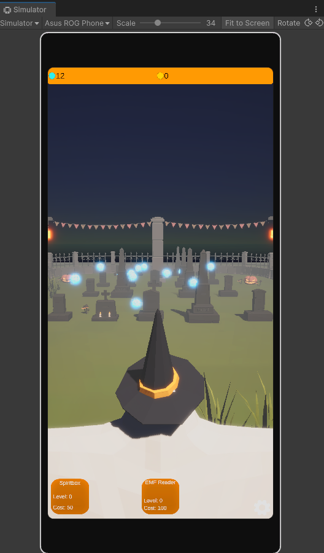

Cameron Patterson | Game Programmer Portfolio
About Me
I’m a gameplay systems programmer with a strong focus on creating scalable, maintainable, and modular systems using C# and Unity. With additional experience in Unreal Engine Blueprints and a foundation in quality assurance, I bring a detail-oriented approach to development.
I’ve designed systems like a Dynamic World System that manages complex environmental conditions such as day/night cycles and weather transitions, built with modularity and extensibility to support evolving design needs.
I thrive in collaborative, iterative environments, solving technical challenges to empower designers and improve development workflows. Explore my projects below for examples of my work in systems programming and game development.
Projects
Prototype - "Soul Harvester"
Project Info
A mobile idle farming game I wanted to explore ideas for after playing one myself. I wanted to create a simple, fun experience with a dark fantasy theme and a focus on progression and upgrades. I was intrigued by the resource management and upgrade systems in idle games, and wanted to create my own take on the genre. One of the challenges was creating a tool in unity that could generate varieties of the graveyard environment. Aswell as creating a modular upgrade system that could be easily expanded with new content.

Prototype - "Horror Fishing"
Project Info
A horror survival game currently in a prototype phase. Set in the vast landscapes of Alaska, you must fish to survive the day and build to survive the night. Currently prototyping and defining project requirements before determining the game engine. So far I have created the day/night cycle, aiming to evolve it into a full 'Dynamic World System' that controls time and weather. Next, I’ll be building a fishing system with casting, reeling, bait selection, species variety, and stat/currency gains from fish. Screenshots show the current system in action.


See code samples
Burnout
Project Info
Burn Out is a short, time-based game set in an office, developed in Unity using C# alongside another team member during a week-long game jam. We achieved this within a condensed timeframe of about three days due to scheduling constraints. I implemented core gameplay mechanics focused on time management and quick decision-making, creating modular C# scripts for player input, timers, and event handling. The project emphasized rapid iteration and clean code to meet tight deadlines, while utilizing Unity’s UI and scene management features to support the player experience.
See code samples
Link To Project
Sundown
Project Info
Sundown is a first-person, narrative-driven psychological horror game developed over the course of a year as part of my university project. Built in Unreal Engine 5 using Blueprints, the game focuses on creating an immersive atmosphere through environmental storytelling, player-driven pacing, and subtle psychological effects.

Link To Project
Potion Maker VR - Unreleased
Project Info
Potion Maker VR is a prototype VR game developed in Unity with C#, where players flip through customer requests and craft potions to aid a village. The current build showcases the core gameplay loop, with future plans focused on enhanced UX and additional polish.


Dungeon Crawler - Unreleased
Project Info
Dungeon Crawler is a third-person 3D prototype developed in Unreal Engine 5 using Blueprints. The project emphasizes combat mechanics, AI behavior, traps, and puzzle design, created as part of an Advanced Game Development module.
Last Turn
Project Info
My first game, developed during college, is a horror experience created in Unreal Engine 4 and released on Game Jolt. Player feedback played a key role in shaping my growth as a developer.